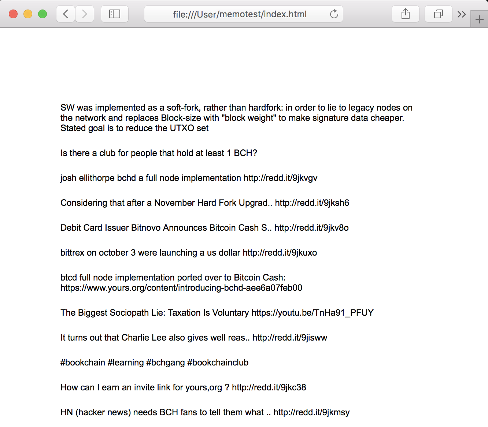

Build a Bitcoin App in 5 Minutes
Required Skills
HTML and JavaScript. That's all!
You don't even need to set up a server, this demo will run server-less, leveraging the bitdb.network public endpoint.
Let's build a bitcoin powered web app using a public BitDB Full Node at bitdb.network.
The app will be 100% frontend (No server) and will fetch and display contents from memo.cash transactions from bitcoin through bitdb. The web app will look like this:

Step 1. Get bitdb.network public node API key
bitdb.network is a full node implementation of BitDB with a free HTTP API endpoint. The endpoint is completely free but you first need to sign up and get an API key (The API key is just for DDOS protection)
Step 2. Construct BitDB query
We are going to fetch bitcoin transactions that follow the memo.cash OP_RETURN protocol. Check out the protocol spec and you'll find the following at the top:

This is just one example protocol, but most other OP_RETURN protocols work in similar ways. In this case there are 3 push data: OP_RETURN, 6d01, and 6d656d6f
The BitDB document format indexes these as:
- out.b0:
{ "op": 106 }(OP_RETURN's code is 106) - out.b1: base64 encoded version of 0x6d01
- out.b2: base64 encoded version of 0x6d656d6f
To learn more about the Bitdb document format, see here
Now that we understand how Memo's protocol works, let's look at the actual "action" that we're interested in. We only want to fetch all the "Post memo" actions and display them.

So what we need is:
- An OP_RETURN output ( {"op": 106} )
- that has
out.b1of 6d02 (in hex format) - and extract out
out.b2(message), which can then be printed on the screen.
Here's an example of what a real-world memo.cash "Post memo" transaction output looks like:
{
...
"out": [{
...
}, {
"i": 1,
"b0": {
"op": 106
},
"b1": "bQI=",
"s1": "m\u0002",
"b2": "SGVsbG8gZ29vZCBqb2Igb25saW5lIHdvcmtpbmcKaHR0cDovL3JlZGQuaXQvOWhmZ2xl",
"s2": "Hello good job online working\nhttp://redd.it/9hfgle",
"str": "<Script: OP_RETURN 2 0x6d02 51 0x48656c6c6f20676f6f64206a6f62206f6e6c696e6520776f726b696e670a687474703a2f2f726564642e69742f396866676c65>",
"e": {
"v": 0,
"i": 1
}
}]
}
The query to filter out above pattern looks like this:
var query = {
v: 3,
e: { "out.b1": "hex" },
q: {
find: { "out.b1": "6d02" },
limit: 50,
project: { "out.b1.$": 1 }
}
};
- v: 2. we're using API version 2 and must specify this in the query protocol.
- e:
{ "out.b1": "hex" }since ourout.b1attribute will be in hex format, we need to specify its encoding as "hex". - q: Inside the q is just a regular MongoDB query.
- find: It's looking for a match for "out.b1": "6d02" (We already specified the hex encoding from above, so the query engine will recognize this as hex)
- limit: get 50
- project: This is a special MongoDB projection operation that only returns a matched subdocument instead of the entire document. In this case, our query will match with a transaction's output, and without this clause it will return the entire transaction. We only want it to return the OP_RETURN output that matched, which is why we've added this line.
Step 3. Write the Web App
Now that we've constructed the query, we just need to make an HTTP request to a bitdb node and render its results (Remember to replace the [YOUR API KEY GOES HERE] part with your own API key from step 1)
<html>
<head>
<style>
body {
padding: 50px;
font-family: arial;
font-size: 12px;
}
div {
width: 500px;
margin: 0 auto;
padding: 10px 0;
}
</style>
<script>
// The query we constructed from step 2.
var query = {
v: 2,
e: { "out.b1": "hex" },
q: {
find: { "out.b1": "6d02" },
limit: 50,
project: { "out.b1.$": 1 }
}
};
// Turn the query into base64 encoded string.
// This is required for accessing a public bitdb node
var b64 = btoa(JSON.stringify(query));
var url = "https://bitdb.network/q/" + b64;
// Attach API KEY as header
var header = {
headers: { key: [YOUR API KEY GOES HERE] }
};
// Make an HTTP request to bitdb.network public endpoint
fetch(url, header).then(function(r) {
return r.json()
}).then(function(r) {
// Parse the response and render the results on the screen
r.confirmed.forEach(function(output) {
var div = document.createElement("div");
div.innerHTML = output.out[0].s2;
document.body.appendChild(div)
})
})
</script>
</head>
<body>
</body>
</html>
And that's it! Open the HTML file in your browser and you should see the following screen, with the latest content from Memo.cash: